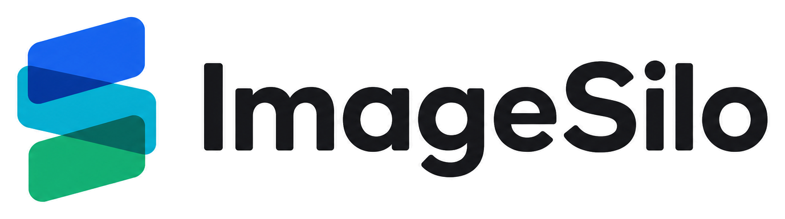

图片库
收好每一张图片，随时找到，轻松分享。
全部图片公开私密

工作台的一角.jpg私密
改为公开复制 ⌄

日光经过的地方.jpg公开
改为私密复制 ⌄

Northern-landscape-2026.jpg公开
改为私密复制 ⌄

山谷里的溪流.jpg公开
改为私密复制 ⌄

浅海礁石.jpg公开
改为私密复制 ⌄

海岸的午后.jpg公开
改为私密复制 ⌄
沿用现有页面风格，主按钮和底部导航选中态采用原来的蓝 → 青 → 绿渐变。

收好每一张图片，随时找到，轻松分享。
七个入口收进悬浮控制台，图标和文字都保留；不把低频功能藏进多层菜单。
主要动作和当前位置使用相同三色渐变；筛选、复制等次级操作保留中性色。
控制台固定，选中背景平滑移动；渐变本身不流动，避免浏览时持续抢占注意力。